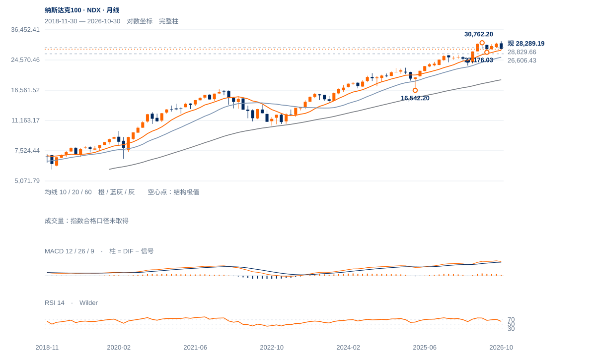

中期受压
未来1—5日偏向重心反复，200日线回收已有改善，28829.66原中峰尚未通过保持。
未来1—5日偏向重心反复，200日线回收已有改善，28829.66原中峰尚未通过保持。
未来2—6周倾向26606—28830内修复，原28829.66两日过滤是升级门槛。即使通过，30762—31361仍是更大高区，反弹空间分段评估。
未来1—3个月以长期牛市中的中期调整为基准。26606守住并形成较高周谷，则可继续重建；连续两周收低26606使25478附近月度均衡更重要。周收重回30762上方后，才提高再创新高的主判断。

展开图表 ↗2022低10440.64、2025年4月16542.20、今年3月22841.42组成长期较高大谷。10月月收28384.85仍高于10/20月均衡27883.88/25478.23；但11月26606.43已跌破7月27176.03，长期背景不能掩盖中期破谷。当前28289回到10月均衡附近，只是第一阶段修复。
6月30762.20、10月31361.37的大高后，反弹回收10月高至11月低价差约35.4%，尚未重夺28829.66原中峰。苹果长线强、英伟达中期弱、微软处多年高区回测，权重内部结构分裂；七股的表现仅为旁证，没有全成分权重时不计算精确贡献或指数广度。
旧谷失守后的反弹只回收约35.4%的10月跌波。28829.66原中峰尚未重夺，同级较高谷也尚未形成。
10月6日31361.37至11月5日26606.43的价差为4754.94点，现价28289.19只回收约35.4%。完整趋势反转所需的较高低点与突破旧中峰尚未齐备。
现价在200日线28029.04上方，但低于20日28650.51；截至11月6日完整周收26989.99，低于10/30周均线29437.59/29167.19。当前未完成周的反弹不能提前当成周线反转。
英伟达重新失守170.24、微软未收回531.22，苹果仍在突破过滤中，特斯拉已完成自身修复条件。该分化支持选择性修复，不能把个别强股当整个指数确认。
原28829.66连续两个完整日收盘过滤不变；28650—28713为先行回收区。
日收低于27940.58先损害最新回收；原26606.43结构条件仍单列。
200日均线已回收且反弹已有幅度，若权重科技回收供应区并带动28830保持，当前区间判断会偏保守。
| 周期 | 最后完整柱 | 图示柱数 | RSI14 | ATR14 | MACD柱 |
|---|---|---|---|---|---|
| 日线 | 2026-11-12 | 185 | 45.30457 | 663.09115 | -22.70768 |
| 周线 | 2026-11-06 | 156 | 39.43274 | 1238.92217 | -394.57618 |
| 月线 | 2026-10-30 | 96 | 62.57963 | 2120.66538 | 129.74119 |
美股价格拆股调整、不含分红再投资。完整周线至11月6日；11月进行中。指数成交量与全成分广度受限。